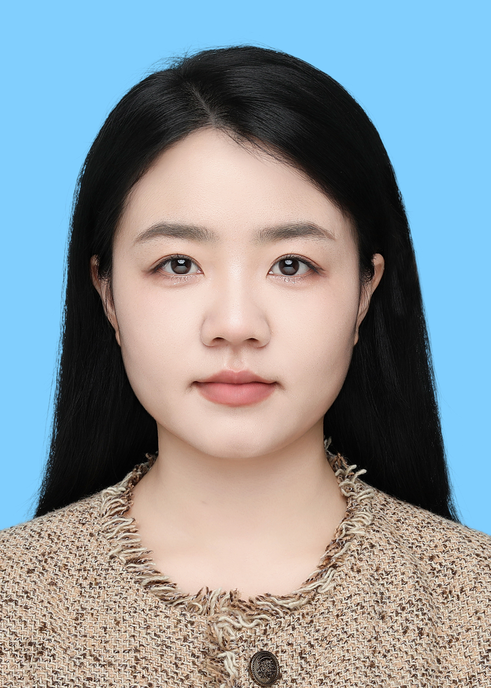

个人简介
程文文博士，中国科学院上海营养与健康研究所博士后，合作导师为靳文菲研究员。主要从事单细胞多模态组学整合技术方法开发，围绕转录组、染色质可及性、蛋白组学及空间组学开展多模态数据整合与生物医学应用研究，重点关注肿瘤免疫微环境及耐药机制解析。以第一作者或共同第一作者在 Nucleic Acids Research、Biomarker Research 和 Developmental Cell 等期刊发表论文 6 篇，主持国家自然科学基金青年科学基金项目（C 类）和上海市“超级博士后”计划。目前聚焦人工智能和图神经网络驱动的单细胞多模态与空间组学整合方法。
教育背景
-
2025.07 – 至今
博士后，生物学
中国科学院上海营养与健康研究所，上海
合作导师：靳文菲 研究员
-
2021.09 – 2025.07
博士，生物学
生物系，南方科技大学，深圳
导师：陈曦 副教授，靳文菲 研究员
-
2023.07 – 2023.10
访问学者
里尔大学医院，法国里尔
导师：Salomon Manier 教授，Suman Mitra 教授
-
2017.09 – 2020.07
硕士，生物信息
信息学院，华中农业大学，武汉
导师：朱强 副教授，张红雨 教授
-
2013.09 – 2017.07
学士，种子科学与工程
农学院，河北农业大学，保定
科研荣誉
-
2027
国家自然科学基金青年科学基金项目（C 类）
主持
-
2026
上海市“超级博士后”计划
主持
-
2024
博士国家奖学金
优秀研究生；学术希望之星 优秀奖
-
2019
优秀毕业生
学术希望之星；一等奖学金
代表性论文
# 共同第一作者 · * 通讯作者
-
2026
Inflammatory bone marrow microenvironment impairs the therapeutic effect of daratumumab–lenalidomide in multiple myeloma.
Biomarker Research 14:119
-
2025
scMMO-atlas: a single cell multimodal omics atlas and portal for exploring fine cell heterogeneity and cell dynamics.
Nucleic Acids Research 53(D1):D1194
-
2024
Decreased GATA3 levels cause changed mouse cutaneous innate lymphoid cell fate, facilitating hair follicle recycling.
Developmental Cell 59(14):1809–1823
-
2020
Identifying risk genes and interpreting pathogenesis for Parkinson's disease by a multiomics analysis.
Genes 11(9):1100
-
2020
Are vitamins relevant to cancer risks? A Mendelian randomization investigation.
Nutrition 78:110870
-
2019
Mineral nutrition and the risk of chronic diseases: a Mendelian randomization study.
Nutrients 11(2):378